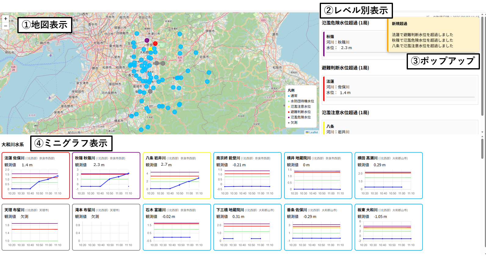
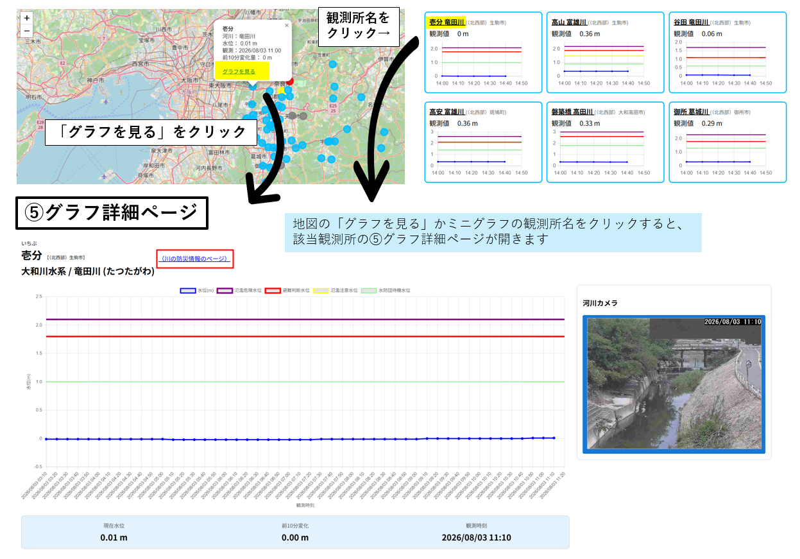

奈良県河川監視システム 使い方
本システムは奈良県内の河川水位観測所の状況を地図およびグラフで確認するためのシステムです。
- 国土交通省「川の防災情報」から水位データを取得しています。
- 10分毎（毎時05分、15分、25分、35分、45分、55分頃）にデータを取得します。データ取得に数分かかります。
画面概要

①地図表示
- 観測地点の色は現在の水位状況を示します。
- 地図上の観測所マーカーにカーソルを合わせるかクリックで詳細を表示します。
②レベル別表示
- 氾濫危険水位、避難判断水位、氾濫注意水位超過観測所を表示します。
- 一覧をクリックすると①の地図が該当観測所へ移動します。
③ポップアップ
- 氾濫危険水位、避難判断水位、氾濫注意水位を新たに超過した観測所があるとポップアップでお知らせします。
④ミニグラフ
- 各観測所カードの枠は水位実況のレベルで色分けしています。
- 河川名の横に観測局のある市町村を表示しておりますが、地点によっては複数の市町村境界にまたがっている場合があるので留意してください。
- 観測所名をクリックすると、グラフの詳細ページが開きます。枠内の他のところをクリックすると、①の地図が該当観測所へ移動します。
表示色
- 青：通常
- 黄緑：水防団待機水位
- 黄：氾濫注意水位
- 赤：避難判断水位
- 紫：氾濫危険水位
- 灰：欠測
⑤グラフ詳細ページ

- 地図上の各観測局の「グラフを見る」またはミニグラフの観測局をクリックすることでグラフ詳細ページが開きます。
- 過去8時間分の水位経過を表示します。
- 観測所/河川名の横の「川の防災情報のページ」を押すと、川の防災情報のページで該当の観測所を表示できます。
- 河川カメラがある場合はカメラ画像も表示しています。